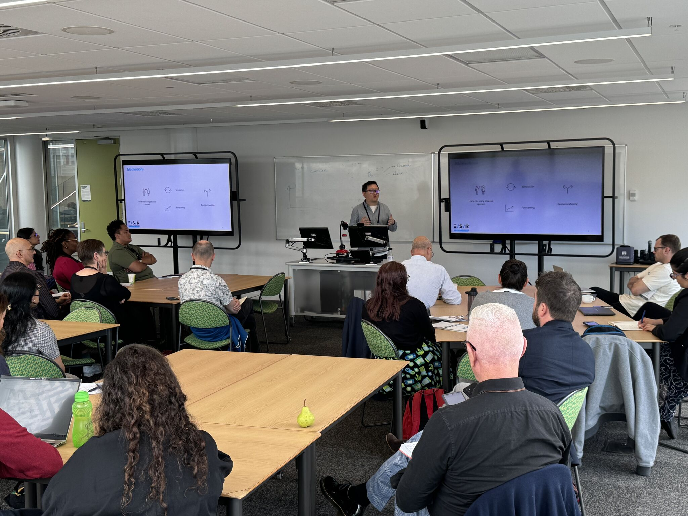

We recently showcased ESR's cutting-edge Large Population Model (LPM), a simulation platform that models over 5 million individuals to predict outbreak scenarios across Aotearoa New Zealand.

Infectious disease modelling has traditionally relied on compartmental models (SIR, SEIR, and their variants) that treat populations as homogeneous groups. While useful for understanding broad dynamics, these models struggle to capture the granular, individual-level heterogeneity that drives real-world outbreaks — differences in age, location, contact patterns, occupation, and health status.
The Large Population Model takes a fundamentally different approach. By simulating every individual in the population as an autonomous agent with realistic demographic attributes, daily routines, and social contact networks, the LPM generates outbreak trajectories that reflect the true complexity of human behaviour.
How the LPM Works
At its core, the LPM integrates multiple data layers:
- Synthetic population — a statistically representative digital replica of New Zealand's 5+ million residents, built from census data, household composition, workplace locations, and school enrolments
- Mobility and activity patterns — daily movement between home, work, school, and community settings, calibrated against real-world transport and mobility data
- Disease transmission model — an agent-based SEIR framework that simulates how infections propagate through contact networks in different settings
- Intervention layer — configurable control measures such as border restrictions, isolation, vaccination rollouts, and physical distancing
By integrating advanced machine learning with these comprehensive datasets, we've enhanced our ability to analyse disease impacts, control measures, and even climate scenarios — all within a single, coherent simulation framework.
From Prediction to Preparedness
The LPM isn't just a forecasting tool — it's a decision-support platform. Public health agencies can use it to ask counterfactual questions:
- What if we had closed borders one week earlier?
- How would a targeted vaccination campaign in Auckland affect nationwide hospitalisations?
- What's the optimal balance between school closures and economic activity?
Each scenario runs across the full 5-million-person simulation, producing not just point estimates but full distributions of possible outcomes — capturing the inherent uncertainty in complex systems.
Looking Ahead
The LPM is an evolving platform. We're actively extending it to incorporate climate-driven disease risks, antimicrobial resistance modelling, and integration with the Digital Twin ALMA platform for real-time decision support.
Infectious disease modelling is entering a new era — one where agent-based simulation, machine learning, and rich population data converge. The LPM represents a step toward that future, and we're excited about the impact it can have on protecting community health across Aotearoa and beyond.